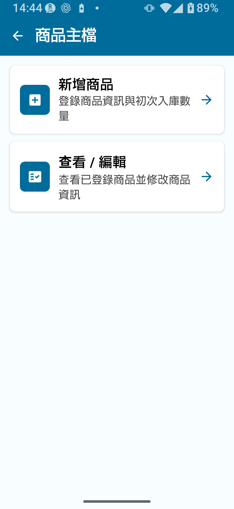
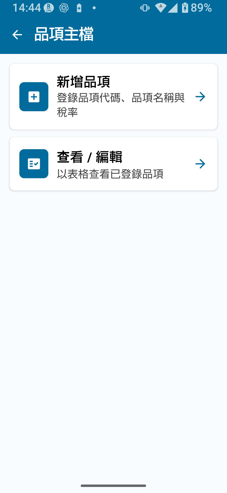
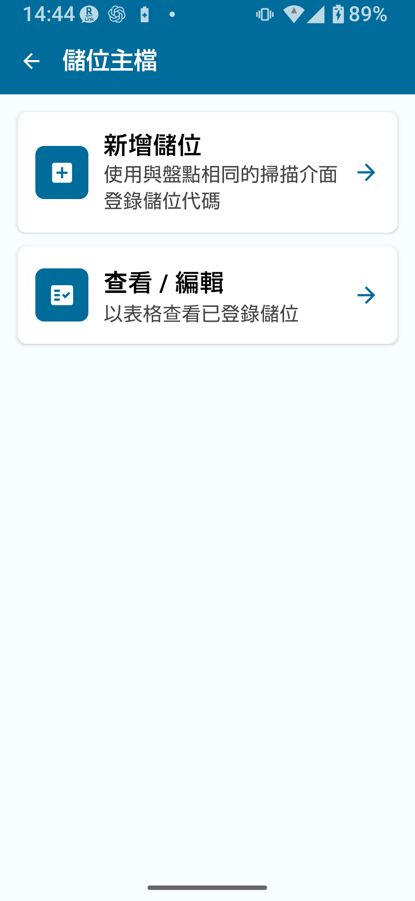
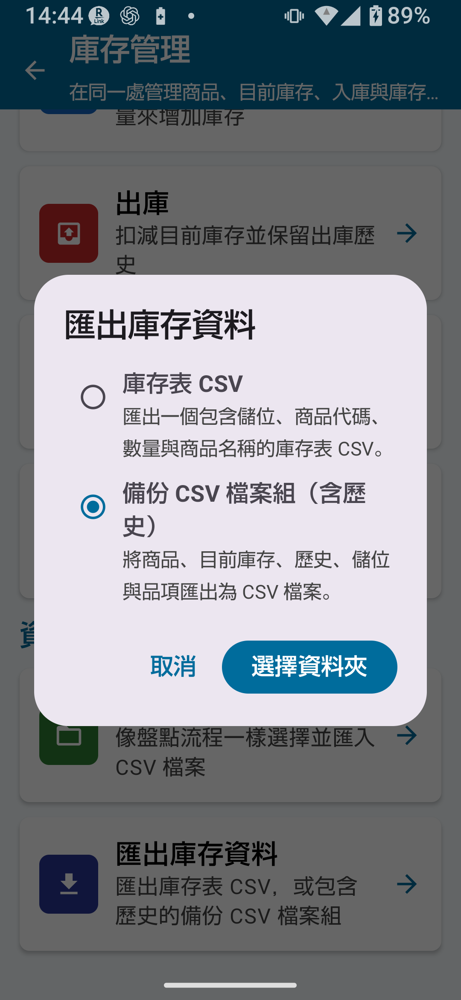

完整版（完整版解鎖）概覽
庫存完整版解鎖移除主資料筆數、歷史項目及匯出行數的所有限制，並啟用標準版中不可用的所有進階功能。核心新增功能包括：多位置管理（倉庫、門市等）、位置間庫存調撥、將盤點結果直接套用至庫存，以及完整的 CSV 備份與還原。
- 主資料筆數、歷史項目及匯出行數不再受限
- 商品主資料中的補貨基準和價格欄位
- 類別主資料（商品分類管理）
- 位置主資料的登錄與管理
- 庫存調撥（在位置間移動數量）
- 將盤點結果反映至庫存
- CSV 備份與還原（庫存表 + 完整備份 CSV 集）
- 歷史記錄備份
- 直接編輯已登錄累計量
- 編碼規則、位置規則及相機掃描設定（完整版共用設定）
- 擴充 CSV 選項（欄位選擇和匯入模式選擇）
與標準版的差異
| 功能 | 免費版 | 標準版 | 完整版 |
|---|---|---|---|
| 庫存查詢 | ✓ | ✓ | ✓ |
| 入庫/出庫 | ✗ | ✓ | ✓ |
| 主資料筆數上限 | 30筆 | 300筆 | 不限 |
| 庫存調撥 | ✗ | ✗ | ✓ |
| 將盤點結果反映至庫存 | ✗ | ✗ | ✓ |
| 類別主資料 | ✗ | ✗ | ✓ |
| 補貨基準與價格 | ✗ | ✗ | ✓ |
| CSV 備份與還原 | ✗ | 受限 | ✓（完整集） |
| 歷史記錄備份 | ✗ | ✗ | ✓ |
| 編碼規則與位置規則 | ✗ | ✗ | ✓（完整版共用設定） |
商品主資料整合
商品主資料用於登錄您管理庫存的實際商品。使用完整版解鎖後，可為每件商品新增補貨基準和價格。
商品主資料關鍵欄位
| 欄位 | 說明 | 完整版新增 |
|---|---|---|
| 商品編號/條碼 | 商品的唯一識別碼 | — |
| 商品名稱 | 商品名稱 | — |
| 類別 | 商品分類（從類別主資料中選擇） | — |
| 價格 | 商品售價或成本價 | ✓ |
| 補貨基準 | 作為用於判斷補貨時機的參考數量下限 | ✓ |

登錄或編輯商品
- 從主畫面開啟主資料管理。
- 選擇商品主資料。
- 點擊新增卡片或新增按鈕。
- 輸入商品編號、名稱和類別，可選填寫價格和補貨基準。
- 點擊儲存完成登錄。
- 編輯已有商品時，在清單中開啟對應列，修改後點擊儲存。
- 商品：庫存中持有的單個品項（如紅色鋼筆、藍色鋼筆）
- 類別：商品分類群組（如文具、食品）
類別主資料
類別主資料管理用於組織商品的分類群組。類別可協助篩選和查看商品主資料。
類別主資料關鍵欄位
| 欄位 | 說明 |
|---|---|
| 類別編號 | 類別的唯一識別碼 |
| 類別名稱 | 分類名稱（如食品、服裝） |
| 分類 | 用於在清單和主資料中整理商品的群組 |
| 顯示順序 | 清單視圖中的排列順序 |

登錄類別
- 進入主資料管理 → 類別主資料。
- 點擊新增卡片或新增按鈕。
- 輸入類別編號、類別名稱和顯示順序。
- 點擊儲存。
位置主資料
位置主資料用於登錄和管理庫存的實物存放地點。透過登錄多個位置（如倉庫、零售區或各個貨架），可按位置追蹤庫存。
位置主資料關鍵欄位
| 欄位 | 說明 |
|---|---|
| 位置編號 | 位置的唯一識別碼 |
| 位置名稱 | 位置名稱（如倉庫、門市A） |
| 顯示順序 | 清單視圖中的排列順序 |
| 計入補貨判斷 | 啟用後，該位置的庫存將被計入庫存查詢畫面的補貨判斷合計中 |
| 啟用/停用 | 不再使用的位置可以停用而不刪除 |

登錄位置
- 進入主資料管理 → 位置主資料。
- 點擊新增卡片或新增按鈕。
- 輸入位置編號、位置名稱和顯示順序。
- 按需開啟或關閉計入補貨判斷。新增項目預設為開啟。
- 點擊儲存。
庫存調撥
庫存調撥將指定數量的庫存從一個位置移至另一個位置，僅完整版可用。

庫存調撥操作步驟
- 從庫存管理選單開啟庫存調撥。
- 選擇來源位置（調出位置）。
- 選擇目標位置（調入位置）。
- 透過掃描條碼或按名稱搜尋找到目標商品。
- 輸入調撥數量。
- 核對詳情後點擊確認。
庫存歷史記錄
庫存歷史記錄提供庫存每次變動的完整記錄。完整版解鎖後，歷史項目上限解除，可儲存長期記錄。
歷史中記錄的操作類型
- 入庫：收入庫存的貨物
- 出庫：從庫存中發出的貨物
- 調撥：位置間移動的庫存
- 盤點調整：反映盤點結果時的差異修正
- 期初庫存：初始登錄時設定的開始數量
- CSV 匯入：透過 CSV 檔案匯入更新的庫存

將盤點結果反映至庫存
將實物盤點結果反映到庫存管理模組，可讓系統庫存更接近現場實際數量，僅完整版可用。
將盤點結果套用至庫存後，理論庫存狀態與實際盤點數量之間的差異將以盤點調整項目記入歷史，同時將庫存更新至實際盤點數量並保留可追蹤的調整記錄。
CSV 備份與還原
完整版解鎖提供三種匯出類型：庫存表 CSV、完整備份 CSV 集和歷史記錄備份。還原和取代操作會對資料進行大範圍變更，執行前請務必仔細核對。
CSV 類型及其用途
| CSV 類型 | 用途 | 主要內容 | 可用版本 | 備註 |
|---|---|---|---|---|
| 庫存表 CSV | 查看並重新匯入目前庫存清單 | 位置、商品編號、商品名稱、數量 | 標準版以上 | 無位置欄時，匯入時選擇目標位置 |
| 完整備份 CSV 集 | 完整資料集備份與還原 | 商品、目前庫存、入庫/出庫/調撥/調整歷史、位置、類別 | 完整版 | 可能匯出為多個檔案 |
| 歷史記錄備份 | 供事後查看庫存變動的備份 | 庫存表 + 完整操作歷史 | 完整版 | 歷史記錄 CSV 的重新匯入行為需確認 |

匯出完整備份 CSV 集
- 從設定畫面或主選單開啟CSV 匯入/匯出。
- 選擇完整備份 CSV 集。
- 選擇目標資料夾（按畫面提示操作）。
- 點擊匯出，確認完成提示。
從 CSV 備份還原
- 進入CSV 匯入/匯出 → 還原或CSV 匯入。
- 選擇備份 CSV 檔案。
- 確認欄位對應（應用程式可能自動識別）。
- 仔細查看確認畫面後點擊執行。
取代目前庫存
取代目前庫存用匯入 CSV 中的數值覆蓋目前庫存數量。現有歷史記錄保留，差異以調整歷史項目記入。CSV 中未包含的庫存列可能被設為 0，匯入前請務必核實 CSV 內容。
歷史記錄備份
歷史記錄備份在一次操作中同時匯出庫存表和庫存變動的完整記錄——入庫、出庫、調撥、調整等，用於事後稽核或追溯庫存變化時使用。
- 庫存表 CSV（目前庫存數量）
- 完整操作歷史（入庫、出庫、調撥、盤點調整、CSV 匯入）
補貨基準與價格
補貨基準
在商品主資料中設定補貨基準，為您提供一個參考閾值：當庫存低於該值時，可一眼看出可考慮補貨。這是輔助管理補貨時機的指標。
價格
可在商品主資料中為每件商品登錄價格，計算庫存總價值或產生報表時會引用該價格。貨幣設定和進位方式的詳細資訊需確認。
與類別配合使用
將商品關聯至類別後，商品主資料和清單更容易依商品類型整理與查看。
完整版工作流程範例
範例1：管理兩個位置——倉庫與門市
- 在位置主資料中登錄「倉庫」和「門市A」。
- 在商品主資料中登錄商品，並設定倉庫的期初庫存。
- 門市可考慮補貨時，使用庫存調撥將庫存從倉庫移至門市A。
- 門市銷售後，透過出庫記錄減少量。
- 定期盤點，使用反映盤點結果使系統庫存與實際盤點數保持一致。
- 每月匯出歷史記錄備份並存檔。
範例2：定期盤點循環
- 月末使用盤點應用程式（盤點完整版）輸入實際盤點數量。
- 確認實際盤點結果。
- 使用反映盤點結果將差異推入庫存模組。
- 在庫存歷史中查看盤點調整項目，確認變更。
- 匯出並儲存完整備份 CSV 集。
重要注意事項
- 對庫存進行大規模變更的操作（取代、套用、刪除）前，務必先備份。
- CSV 匯入時，執行前請查看預覽或確認畫面。
- 僅有一個位置時，請使用入庫、出庫或編輯，而非庫存調撥。
📌 本章重點
- 完整版解鎖移除所有記錄和歷史上限，並啟用補貨基準、價格、類別主資料、位置管理、庫存調撥、盤點套用及 CSV 備份。
- 三類主資料協同運作：商品主資料（庫存商品）、類別主資料（分類群組）、位置主資料（存放地點）。
- 庫存調撥僅在兩個不同位置間有效，切勿將同一位置作為來源和目標。
- 反映盤點結果可使實際盤點數與系統庫存同步，差異以盤點調整歷史項目記錄。
- 取代目前庫存、反映盤點結果或刪除等不可逆操作前，務必備份。
- 定期（每週或每月）執行歷史記錄備份，可降低資料無法還原的風險。
使用前檢查
- 反映盤點結果的精確條件（時機、多位置處理、復原行為）
- 透過重新匯入歷史記錄備份 CSV 還原庫存的流程和行為
- 庫存低於補貨基準時是否會顯示提示或通知，以及實際行為
- 價格的貨幣設定和進位方式
- 商品和位置主資料記錄能否刪除，以及已刪除記錄能否還原
- 完整版解鎖的購買價格和銷售條款（在 Google Play 上確認）
- 已確認的庫存調撥能否復原